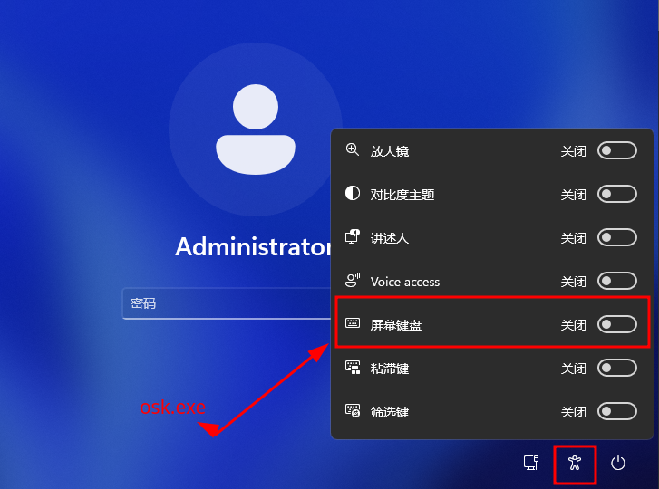
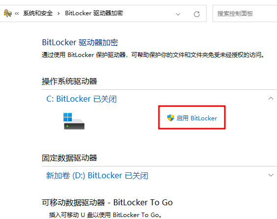

[Win基础]-3-用Linux启动U盘破解Windows开机密码
引言
这篇文章主要介绍如何使用Linux系统U盘破解Windows开机密码，以及如何防范。
文章目录
0×1.Linux启动U盘破解Windows开机密码思路
此方法适用于WindowsXP/7/8/10/11，在往后的版本中，只要windows登陆界面的“轻松访问”（Utilman）功能不被取消，就能使用这个破解方法。
在WindowsXP往后的操作系统中，启动界面加入了一项叫做"轻松访问"（Utilman）的功能，这项功能的主要目的，是帮助一些视力、听力不太好，或者不能用键盘输入的用户完成一些操作。 这个叫做"轻松访问"的功能能够在输入密码前被执行，这就给我们提供了一个思路，如果我们替换"轻松访问"中的某项功能，那么就能实现在输入密码前执行替换过后的某个程序，即可达到破解密码的目的。 下面为WIN11的启动界面（Win7同样有这个图标，只是弹出来的界面不一样，但是同样能看到"屏幕键盘"，XP需要按键盘上的"Win键+U"即可打开轻松访问。注意：精简版的系统可能将这个功能删除，这时候可以将cmd.exe复制成Utilman.exe，只要在开机界面调用“轻松访问”功能即可打开cmd，之所以替换屏幕键盘osk.exe，是因为这样更加隐蔽。）
这些功能也经常被hack利用，用作登录界面的后门维持。
0×2.windows如何防范U盘破解系统密码
windows10往后的操作系统内置了BitLocker功能，如果对系统盘开启这个功能，就能防止通过U盘读取系统盘，这样U盘系统就无法去读取系统盘文件夹系统，从而无法替换登录界面的功能了。
但是开启Bitlocker一定别忘了恢复秘钥，否则无法解密数据，到文章发布这个时间点为止，还很难破解这种分区加密。
0×3.Linux启动U盘破解Windows开机密码视频演示
点击下方视频标题，可以进入B站观看高清版本
【第7天】Windows基础-7-用Linux启动U盘破解Windows开机密码，不要干坏事哦~-大一女新生挑战一年精通网络安全-信息安全-网安，我无所畏惧
第一篇文章中演示的虚拟机的下载可以通过我这个uc网盘去下载，里面包含了很多现成的系统镜像，还有虚拟机的激活码，也可以去官方下载，千万别去其他地方下精简版，很多问题都出在这里。网盘包含了最新的Windows+激活软件，流行的Linux镜像，会持续更新。
*「虚拟机全套软件+ISO镜像文件」(会一直持续更新):点击打开 密码：8s6H